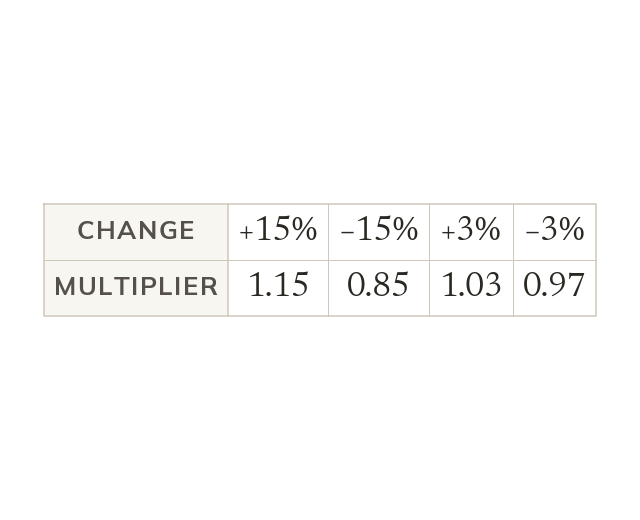
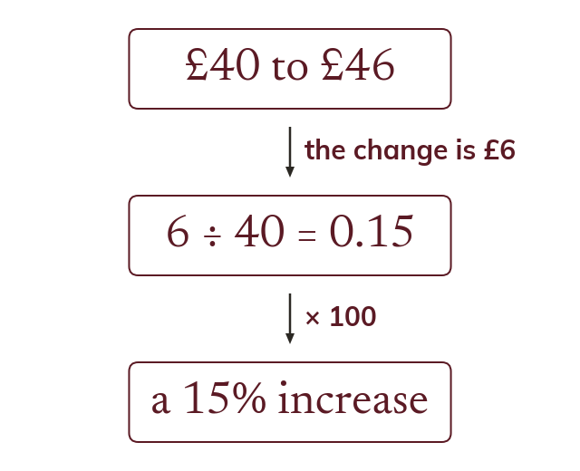
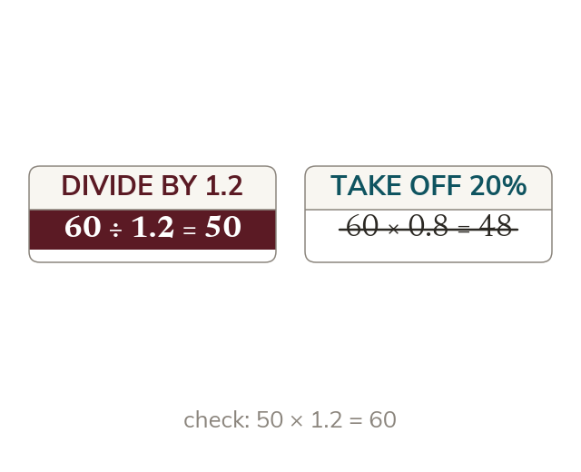
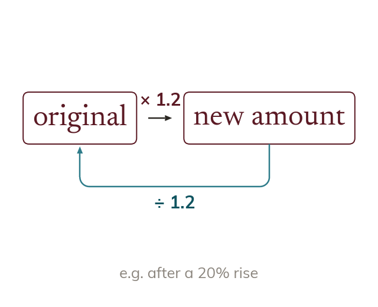
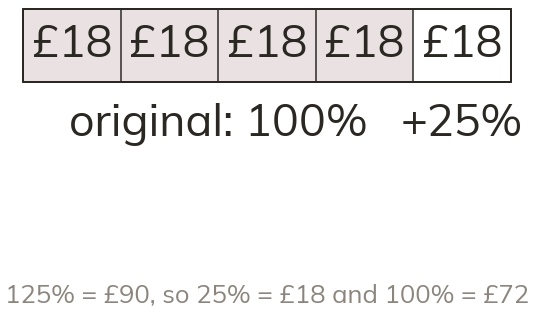
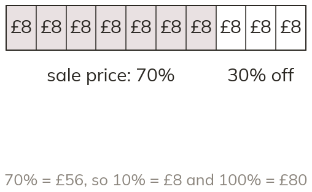

One multiplier does it
An increase of multiplies by
The new amount is of the old. A decrease of multiplies by
An increase of multiplies by because the new amount is of the old. A decrease of multiplies by
Prices rise, sales cut them and wages go up by a percentage every year. One multiplier handles every one of these, forwards and backwards.
Work down the page at your own pace. Write every answer in your book first, then click to check it.
Read each card, then follow the worked examples one step at a time.

An increase of multiplies by
The new amount is of the old. A decrease of multiplies by

Percentage change is the change divided by the original amount, times
The original is always the denominator, whether the amount went up or down.
Pick an answer. If it's wrong, the feedback tells you which mistake it was.
Read each card, then follow the worked examples one step at a time.

In a reverse percentage the amount given is the amount after the change. After a rise, is of the original, not of it.

The original × the multiplier = the new amount. So the original = the new amount ÷ the multiplier. Multiply back to check.


Pick an answer. If it's wrong, the feedback tells you which mistake it was.
Finished? Next lesson: 10.13.4 Compound Interest and Depreciation.
Log in, then search for a code to practise that skill.